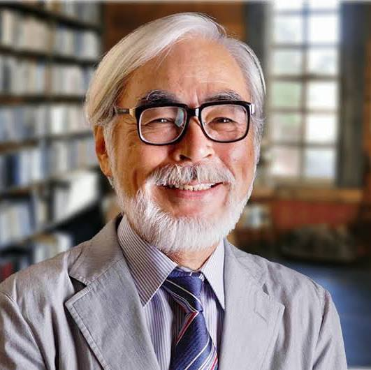
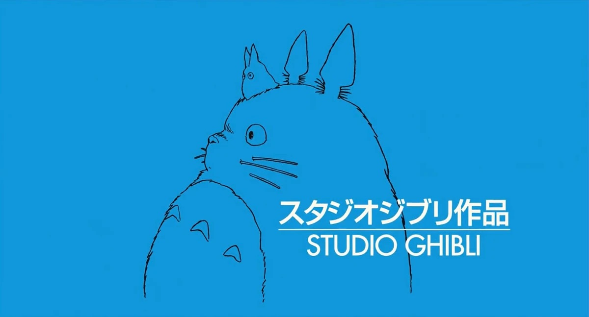
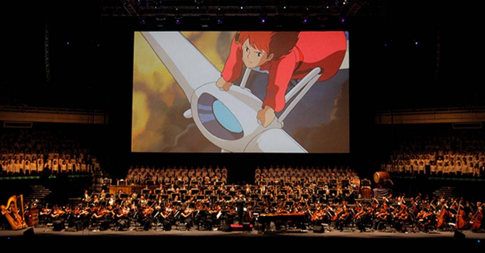

Spirited Away, produced by Studio Ghibli and directed by Hayao Miyazaki, boasts an impressive sound track.

Miyazaki created Spirited Away after wanting to make a film specifically for ten-year-old girls, inspired by the young daughters of family friends. He envisioned Chihiro as an ordinary heroine audiences could relate to, rather than a traditionally glamorous protagonist.
The idea for the bathhouse setting was inspired by bathhouses from Miyazaki’s childhood hometown, places he viewed as mysterious and magical.

Production began in February 2000 with a budget of ¥1.9 billion (approximately $15 million USD). While Studio Ghibli experimented with computer animation during production, the film remained primarily hand-drawn, with technology used only to enhance the story rather than overpower it.
Miyazaki worked closely alongside animators to perfect every frame, and many scenes were cut in order to shorten the film from its originally planned three-hour runtime.

The score for Spirited Away was composed by longtime Miyazaki collaborator Joe Hisaishi and performed by the New Japan Philharmonic. The soundtrack won multiple awards and is widely praised for its emotional depth and dreamlike atmosphere.
The film’s ending theme, Always With Me, was written and performed by Youmi Kimura and later became one of the most iconic songs associated with the film.